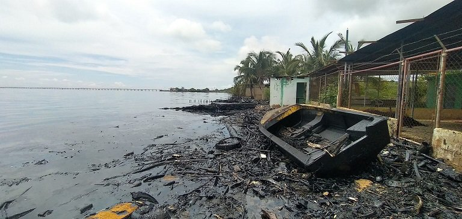

Desechos petrolizados
El petróleo es un hidrocarburo, compuesto orgánico formado únicamente por carbono e hidrógeno. El petróleo es altamente contaminante, y su derrame en las aguas oceánicas, es cada vez más frecuente, y sus efectos se prolongan por mucho tiempo El tratamiento de los residuales de la industria de refinación del petróleo, comprende la disposición de los lodos acumulados en el fondo de los tanques de almacenamiento de combustibles Estos desechos contienen hidrocarburos contienen contaminantes peligrosos al medio como metales pesados, hidrocarburos poliaromáticos de carácter cancerígeno, entre otros.
Contaminación ambiental
Las actividades relacionadas a la exploración hidrocarburífera ocasionan diversos cambios adversos, e incluso daños irreparables en el ambiente donde se desarrollan dichas actividades, con riesgos para la salud y la propia industria. A partir de esto, se puede argumentar que la contaminación ambiental proveniente de la industria hidrocarburífera incide en el aire, el agua, el suelo, de forma radioactiva, lumínica, sonora y visual, evidenciando de forma clara cuatro clases de contaminación ambiental: contaminación física (efectos nocivos a la salud), química-biológica, psicosocial y sociocultural. La contaminación ambiental se ha convertido en un tema de interés para la sociedad actual, donde han surgido nuevos profesionales especializados que buscan proponer nuevas alternativas, soluciones oportunas y efectivas para resolver dichos problemas ambientales. Tales profesionales deben mostrar conocimientos de responsabilidad social para establecer programas de educación ambiental y eliminación de la contaminación por medio de campañas de socialización y concientización a los individuos relacionados e involucrados con la actividad petrolera.

Playas afectadas
Principales características de la contaminación por petróleo.
- Desastres medioambientales o catástrofe ecológica. Es una polución química, toxica, inflamable y carcinógeno.
- Produce la muerte de muchas especies, las aves son las más afectadas
- No es biodegradable. Sus efectos dependen del lugar, el momento, tipo de hidrocarburo, viento, corrientes oceánicas, temperatura del agua, cantidad y exposición.
Principal causa de contaminación por desechos petrolizados: derrame de petróleo.
Un derrame de petróleo o marea negra es un vertido de este hidrocarburo que se produce debido a un accidente que contamina el medio ambiente, especialmente el mar. Estos derrames afectan todo el ecosistema donde se produce el evento a lo cual perjudica gravemente la vida marina y la pesca, así como a las costas con efectos que pueden llegar a ser muy persistentes en el tiempo.
La mayoría de los desastres petrolíferos pasan en el mar, sobre todo cerca de las costas donde los ecosistemas son más diversos y llenos de millares de diferentes especies.
La gravedad del derrame petrolero se da por diferentes causas entre ellas: deficiencia del mantenimiento, tuberías desgastadas por el tiempo y desastres naturales. Si existe un derrame de petróleo, se genera afectaciones graves que en ocasiones son irrecuperables sobre todo si se trata de ecosistemas frágiles y únicos. Con respecto a las poblaciones cercanas en donde existen conductos de petróleo y surge derrames, esta población se encuentra expuesta a contraer enfermedades y presentar daños irreversibles en su salud, convirtiéndose en un problema para el sector de salud pública.
Impactos directos petroleros.
La actividad petrolera causa impactos ambientales cuyo origen radica en las características técnicas de la explotación del recurso; es decir, la obtención del crudo. Los impactos directos están compuestos por el producto (petróleo) y los subproductos (aguas de formación) convirtiéndose en los contaminantes directos de una zona o lugar de donde se extrae el recurso. Ciertamente se puede evaluar por diferentes métodos los impactos petroleros directos, ya que se produce la pérdida parcial o total de un recurso no renovable teniendo como resultados un impacto ambiental de proporciones variables.
Impactos indirectos petroleros.
Los impactos petroleros indirectos se encuentran relacionados con los derrames de petróleo en el medio ambiente, es decir, en ecosistemas frágiles de faunas, carreteras, ríos o poblaciones. Como efectos de impactos directos existe una gravedad por el derrame, perdida de hábitat causada por los derrames, además si el derrame reincide en el mismo sector se le conoce como factor estresante.
Consecuencias
Por consiguiente, las consecuencias más importantes de esta contaminación son:
Destrucción de ecosistemas marinos. Muerte de especies por asfixia o envenenamiento. Hipotermia. Efectos subletales, ceguera y dificultad para volar en las aves. Destrucción de la fuente de alimentación de las especies. Efecto en la reproducción de los organismos, efecto del fitoplancton en la fotosíntesis. Impacto sobre la actividad pesquera y turística. Desequilibrios en los procesos biológicos, carcinógenos en la cadena alimentaria y posteriormente en la salud humana.
La industria petrolera. PDVSA, principal agente contaminante.
La explotación de petróleo y la producción de sus subproductos, así como las instalaciones para el transporte del crudo o de sus procesados, emplean grandes extensiones delicadas de terreno afectando al medio ambiente de forma particular y directa mediante la emisión de gases a la atmósfera, desechos sólidos a los suelos y desechos en general a los afluentes hídricos, los cuales son altamente contaminantes afectando así el frágil equilibrio del ecosistema compuesto por zonas de una elevado valor ecológico para la nación y el mundo en general . En resumen, la contaminación proveniente de la actividad petrolera es un problema de alcance mundial que precisa la atención de investigadores y científicos, donde puedan mostrar a la sociedad los efectos adversos de la práctica industrial asociada al petróleo. En materia ambiental, PDVSA desde hace muchos años ha incluido el componente ambiental en su gestión, inicialmente a través de la Gerencia de Seguridad, Higiene y Ambiente (SHA) y, actualmente, a través de la Gerencia de Ambiente e Higiene Ocupacional (AHO, 2007), cuya función es desarrollar una política ambiental en la cual define orientaciones para regular y hacer frente a las situaciones que se derivan de los procesos y acciones llevadas a cabo por la empresa, en el marco del aprovechamiento sustentable de los recursos energéticos derivados del gas y del petróleo. A partir de estas orientaciones, las prioridades se establecen en torno al manejo de los recursos naturales, la evaluación y la minimización de los impactos negativos generados por los procesos de la industria sobre los ecosistemas, la conservación de la biodiversidad, los recursos hídricos, los suelos y el aire, así como la prevención y el manejo de los pasivos ambientales (AHO, 2007). Para hacer cumplir dicha política se crea el Comité Técnico de Normalización de Ambiente de PDVSA (CTNA), dedicado a la elaboración y revisión de normas, mejores prácticas y procedimientos que establezcan soluciones técnicas y uniformes en los procesos de la industria, cuyo cumplimiento garantizará la protección de la salud de los trabajadores, las instalaciones y el ambiente. Para ello se proyecta desarrollar una normativa interna para las actividades. Actualmente, el CTNA trabaja en la elaboración de las normas para el manejo de Ripios y Fluidos Residuales de Perforación, Manejo de Aceites Usados, Manejo de Catalizadores Gastados y Manejo de Aguas de Producción. También pretende crear una normativa que desarrollará los lineamientos para elaborar los estudios ambientales y socio-culturales en las áreas de influencia de la industria petrolera, como instrumento que impulse la conservación y protección de los ecosistemas, agua, biodiversidad y el control de los impactos generados por las actividades de la industria de los hidrocarburos. Esto actualmente no se divisa que se esté llevando a cabo, debido a que la problemática Ambiental en el Municipio Cabimas sigue persistente y aumento.
Prevención de contaminación por petróleo
Así pues, las principales medidas para prevenir la contaminación por petróleo son: (información ambiental, plan de acción de emergencia, mantenimiento de los equipos, la preparación o formación de los operadores de los buques petroleros, gestión ambiental, cumplimiento del marco legal, justicia económica y fiscal).
En cuanto a su mitigación, las principales acciones son la contención y recogida, bombeo por aspiración, centrifugación, adherencia a tambor o discos giratorios, fibras absorbentes, dispersantes, incineración, biodegradación, limpieza de las costas y que la naturaleza actué por si sola.